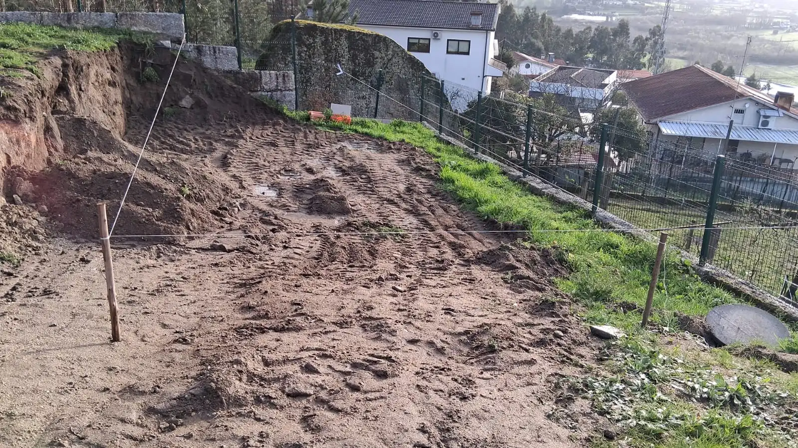
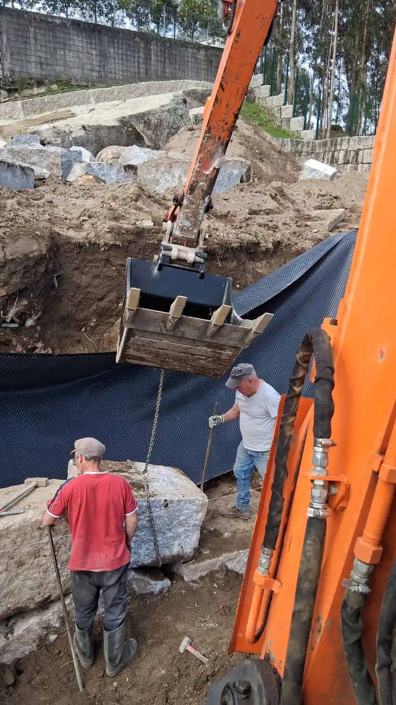
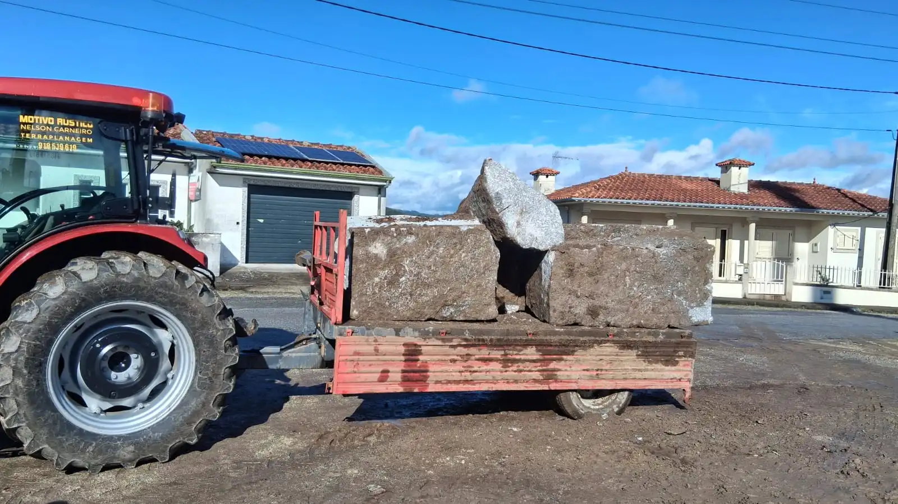

Desaterros para Piscinas em Guimarães
Vai instalar uma piscina em casa? Antes de pensar no revestimento, nos acabamentos ou na zona de lazer, há uma fase decisiva que não deve ser subvalorizada: o desaterro e a preparação correta do terreno. Em Guimarães e em várias zonas do Minho, é frequente encontrarmos quintais com inclinação, acessos limitados, solos irregulares e necessidade de drenagem. É precisamente aí que um trabalho bem executado faz toda a diferença.
Na Motivo Rústico, realizamos desaterros para piscinas com foco na segurança, na estabilidade e na preparação do terreno para a fase seguinte da obra. Trabalhamos com maquinaria própria, experiência real em terreno e atenção aos pormenores que ajudam a evitar problemas futuros. Além disso, também podemos apoiar empresas de piscinas que precisem de uma equipa local para tratar da escavação e da preparação do espaço antes da instalação.
O que é um desaterro para piscina?
O desaterro para piscina é o trabalho de escavação e modelação do terreno para criar o espaço necessário à instalação da piscina. Dependendo do tipo de projeto, pode incluir remoção de terras, ajuste de níveis, regularização da base e criação de condições para drenagem e acesso.
Em muitos casos, o terreno parece simples à primeira vista, mas apresenta diferenças de cota, zonas de enchimento antigo, pedra, humidade ou pouca estabilidade. Por isso, o serviço deve ser feito com método e com equipamento adequado.
Porque é tão importante preparar bem o terreno?
- Evita abatimentos: uma base mal preparada pode comprometer a estabilidade da piscina.
- Reduz problemas de água: a drenagem correta ajuda a evitar acumulações e erosão.
- Garante cotas certas: a piscina fica bem implantada no espaço e alinhada com a envolvente.
- Facilita a obra seguinte: instaladores e restantes equipas trabalham melhor com o terreno pronto.
- Protege o investimento: corrigir erros mais tarde costuma ser mais caro do que fazer bem de início.


Como funciona um desaterro para piscina passo a passo
1. Avaliação do terreno
O primeiro passo é perceber o tipo de solo, a inclinação, o acesso para máquinas e a área disponível. Também avaliamos se existe necessidade de conter terras, abrir acessos ou preparar o escoamento de águas.
2. Marcação da área e cotas
Depois de definida a localização da piscina, marcamos a zona de intervenção para garantir que a escavação respeita as medidas previstas e a implantação desejada.
3. Escavação e remoção de terras
Com a ajuda de escavadora e maquinaria de apoio, retiramos a terra necessária e modelamos o espaço em função da obra. Quando o terreno exige, fazemos o ajuste faseado para garantir controlo e segurança.
4. Regularização e nivelamento
Após a escavação, o terreno é regularizado para criar uma base coerente e pronta para a fase seguinte da obra. Esta etapa é essencial para evitar desníveis ou zonas instáveis.
5. Preparação da base e drenagem
Em terrenos com humidade ou inclinação, pode ser recomendável prever drenagem e estabilização complementar. Em muitos casos, este cuidado evita água acumulada junto à estrutura.
Desaterros para piscinas em terrenos inclinados no Minho
Em Guimarães e em várias localidades do Minho, é comum existirem terrenos em socalco, quintais com inclinação ou espaços exteriores junto a muros e taludes. Nestas situações, o desaterro deve ser pensado com ainda mais atenção.
Um terreno inclinado pode obrigar a soluções complementares, como reorganização de cotas, reforço da drenagem ou até a execução de muro de suporte. É por isso que a experiência prática conta tanto: cada terreno exige leitura, adaptação e bom senso técnico.
Quando pode ser necessário fazer muro de suporte?
Nem todos os projetos precisam de contenção, mas há casos em que essa solução é importante para garantir segurança e durabilidade. Se a piscina vai ficar implantada junto a um desnível, corte de terras ou zona mais alta do terreno, pode ser necessário construir um muro para segurar o solo.
A Motivo Rústico tem experiência em muros em pedra e trabalhos de terraplanagem, o que nos permite enquadrar melhor este tipo de obra e propor soluções ajustadas ao local.
Que máquinas usamos neste tipo de trabalho?
Para desaterros para piscinas, trabalhamos com maquinaria própria adequada à escavação, modelação e apoio à obra. A escolha do equipamento depende do acesso, do volume de terras e da configuração do terreno.
- Escavadora para abertura, remoção de terras e modelação do espaço;
- Equipamentos de apoio para transporte e organização de materiais;
- Maquinaria ajustada a obras em zonas rurais, quintais e terrenos com acessos condicionados;
- Capacidade para articular desaterro, nivelamento e preparação do terreno na mesma intervenção.
Quanto tempo demora um desaterro para piscina?
O tempo varia conforme a dimensão da piscina, o tipo de solo, o acesso ao terreno, a quantidade de terra a remover e as condições meteorológicas. Há trabalhos simples que se resolvem rapidamente, enquanto outros exigem mais tempo por causa de desníveis, pedra ou necessidade de drenagem.
A melhor forma de obter uma resposta realista é fazer uma avaliação no local. Assim, consegue perceber o que é necessário desde o início e evitar surpresas.
Porque escolher a Motivo Rústico?
- Experiência prática em terreno real, incluindo zonas inclinadas e acessos difíceis;
- Maquinaria própria e capacidade de adaptação ao tipo de obra;
- Conhecimento local de Guimarães, Braga e Minho;
- Serviço completo, desde a escavação à preparação cuidada do terreno;
- Trabalho honesto, próximo e ajustado à realidade de cada terreno.
Para além do cliente final, este tipo de experiência também é útil para empresas de piscinas que procuram um parceiro local para tratar da parte de base da obra. Ou seja, o foco continua a ser explicar o processo ao leitor que quer instalar uma piscina, mas o artigo também mostra que a Motivo Rústico pode colaborar com profissionais do setor.
Vai instalar uma piscina?
Antes de avançar, confirme se o terreno está realmente pronto. Fazemos desaterros para piscinas em Guimarães e no Minho, com escavação, nivelamento e preparação ajustada ao seu espaço.
Perguntas frequentes sobre desaterros para piscinas
-
Quanto custa um desaterro para piscina em Guimarães?O valor depende da dimensão da piscina, do acesso ao local, da quantidade de terras a remover, do tipo de solo e da necessidade de drenagem ou contenção. A forma mais correta é pedir avaliação no local.
-
É possível fazer piscina num terreno inclinado?Sim. Em muitos casos é perfeitamente possível, desde que o terreno seja bem estudado e preparado. Pode ser necessário ajustar cotas, melhorar a drenagem ou criar contenção.
-
O que acontece à terra retirada?Depende do projeto. Em certas obras é possível reaproveitar parte da terra no próprio terreno; noutras, a remoção e encaminhamento têm de ser planeados conforme a intervenção.
-
É preciso nivelar sempre o terreno?Na maioria dos casos, sim. O nivelamento ajuda a criar uma base mais estável, a respeitar as cotas previstas e a facilitar a instalação correta da piscina.
-
Também fazem drenagem e muros de suporte?Sim. Quando o terreno o exige, podemos enquadrar soluções de drenagem e trabalhos de contenção, incluindo muros em pedra, para deixar a obra bem resolvida desde o início.
-
A Motivo Rústico também pode trabalhar com empresas de piscinas?Sim. Embora o foco do serviço seja ajudar quem vai instalar uma piscina, também podemos colaborar com empresas de piscinas que precisem de uma equipa local para desaterro, escavação e preparação de terreno em Guimarães e no Minho.
Precisa de ajuda para avançar com a sua piscina?
Fale connosco através da página de contactos. Na Motivo Rústico tratamos da preparação do terreno
com seriedade, experiência e conhecimento da realidade de Guimarães e do Minho.
 Fale Connosco
Fale Connosco